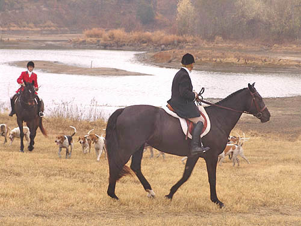

11/26/05
Opening Meet at Rush Creek
The water levels are low. This would normally be covered in water.
Roading in to the tally ho wagon.
Laura and Babe, a bit wet from the recent rain.
The field making their way to the tally ho wagon.
Aver and Bruno walking in.
Diane and Jane posing for a picture.
Chrissie taking a break, but still watchful of the hounds.
Aver and Sharon discussing the drink options.
Katie was out with her mare, Bella.
Chrissie, with Indy, calling to the hounds.
Jennifer and Thuy, a bit damp, but enjoying the day.
Getting ready to gather the hounds.

Chris and Sophie keeping an eye on the hounds.
Heading off toward dragon jump and the woods.
Aver and Laura on their way.
David and Othello leading the way to Dragon jump.
Simon was quite eager to follow Othello over the fence.
Othello makes it look easy.
I believe this is Meg going over.
Pictures continued on the Next Page